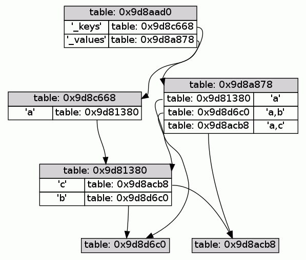

A Lua table maps single (non-nil) keys to single values. While it is easy to wrap multiple values in an array to store it in the table, using multiple keys as indices is not as simple because every array used to group multiple keys would map to a different value. This small module provides a table class that can be indexed by multiple keys to store and retrieve a mapped value.
Load the module, create an object, and put/get values using the objects methods:
$ cat > test.lua
local multikey = require( "multikey" )
local t = multikey()
t:put( 1, "first" )
t:put( 1,1, "second" )
t:put( 1,2, "third" )
t:put( 1,"x", "other" )
print( 't:get( 1 ) ==', t:get( 1 ) )
print( 't:get( 1,"x" ) ==', t:get( 1,"x" ) )
print( 't:get( 1,"y" ) ==', t:get( 1,"y" ) )
for a,b,c in t:ituples() do
print( a, b, c )
end
^D
This results in:
$ lua test.lua
t:get( 1 ) == first
t:get( 1,"x" ) == other
t:get( 1,"y" ) == nil
1 first nil
1 1 second
1 2 third
The multikey module provides a class for storing mappings from
multiple keys to single values. It is more expensive in terms of
memory and performance than normal Lua tables that only store single
key-value mappings, so use it with care.
multikey:new() ==> object or multikey() ==> object
This is the constructor of a multikey object. The object is returned.
object:get( ... ) ==> value
The get-method retrieves a value from the multikey object. The
keys are given as separate arguments to this method and can be any
Lua value (including nil and NaN). Zero arguments are possible
as well.
object:put( ... ) ==> object
This method puts a value into the multikey object indexed by any number and type of arguments. The last value of the argument list is the value to be stored, all arguments before are keys. The method returns the multikey object itself for method chaining.
object:putv( value, ... ) ==> object
This method is similar to the put-method above, but the value to
be stored comes first in the argument list.
object:clear() ==> object
This method removes all key-value-mappings from the given multikey object.
object:tuples( ... ) ==> for-loop-iterator
The tuples-method returns an iterator-triple that can be used in
a for-loop to iterate over all keys and values similar to the
pairs-iterator. Since nils are valid keys in multikey objects,
the first value the iterator returns is a non-nil dummy, so that
the for-loop is not stopped prematurely. You can specify a set of
keys to start the iteration from as arguments to this method.
object:ituples( ... ) ==> for-loop-iterator
The ituples-method returns an iterator-triple that can be used
in a for-loop to iterate over all integer keys starting from 1. It
does not use a dummy value as the tuples-method above.
All methods listed above can also be used as normal module functions on ordinary tables (the table is always the first parameter).
This module exploits the fact that a Lua table can be used as a unique
key in another table and as a container for other key-value mappings.
Here is what a multikey object looks like after mt:put( "a", "a" ),
mt:put( "a","b", "a,b" ), and mt:put( "a","c", "a,c" ):
mt = {
[ <private key> ] = {
a = { -- this table is t1
b = {}, -- this table is t2
c = {} -- this table is t3
}
},
[ t1 ] = "a", -- table t1 from above is used as a key
[ t2 ] = "a,b", -- table t2 from above is used as a key
[ t3 ] = "a,c" -- table t3 from above is used as a key
}
This is the same thing but as a pretty picture:

One popular use of normal Lua tables is to memoize functions,
i.e. cache the result of a function call indexed by the argument of
the call and reuse the result if the same arguments are used again.
Normal tables only support one key and therefore single argument
functions. Using the multikey module support for any number of
arguments is possible. The multikey.memoize submodule contains such
an implementation.
Basic usage is:
$ cat > test.lua
local memoize = require( "multikey.memoize" )
local function f( a, b, c, d )
print( "f called:", a, b, c, d )
return a+b, c+d
end
local f2 = memoize( f )
print( f2( 1, 2, 3, 4 ) )
print( f2( 1, 2, 3, 4 ) )
print( f2( 1, 3, 3, 4 ) )
print( f2( 1, 3, 3, 4 ) )
print( f2( 1, 2, 3, 4 ) )
^D
The result is:
$ lua test.lua
f called: 1 2 3 4
3 7
3 7
f called: 1 3 3 4
4 7
4 7
3 7
Beware that this memoization is a lot more expensive than the single argument version, so profile first!
The source code (with documentation and test scripts) is available on github.
There are two ways to install this module, either using luarocks (if this module already is in the main luarocks repository) or manually.
Using luarocks, simply type:
luarocks install multikey
To install the module manually just drop multikey.lua and the
multikey-directory somewhere into your Lua package.path.
Philipp Janda, siffiejoe(a)gmx.net
Comments and feedback are always welcome.
multikey is copyrighted free software distributed under the MIT
license (the same license as Lua 5.1). The full license text follows:
multikey (c) 2011,2014 Philipp Janda
Permission is hereby granted, free of charge, to any person obtaining
a copy of this software and associated documentation files (the
"Software"), to deal in the Software without restriction, including
without limitation the rights to use, copy, modify, merge, publish,
distribute, sublicense, and/or sell copies of the Software, and to
permit persons to whom the Software is furnished to do so, subject to
the following conditions:
The above copyright notice and this permission notice shall be
included in all copies or substantial portions of the Software.
THE SOFTWARE IS PROVIDED "AS IS", WITHOUT WARRANTY OF ANY KIND,
EXPRESS OR IMPLIED, INCLUDING BUT NOT LIMITED TO THE WARRANTIES OF
MERCHANTABILITY, FITNESS FOR A PARTICULAR PURPOSE AND NONINFRINGEMENT.
IN NO EVENT SHALL THE AUTHOR OR COPYRIGHT HOLDER BE LIABLE FOR ANY
CLAIM, DAMAGES OR OTHER LIABILITY, WHETHER IN AN ACTION OF CONTRACT,
TORT OR OTHERWISE, ARISING FROM, OUT OF OR IN CONNECTION WITH THE
SOFTWARE OR THE USE OR OTHER DEALINGS IN THE SOFTWARE.